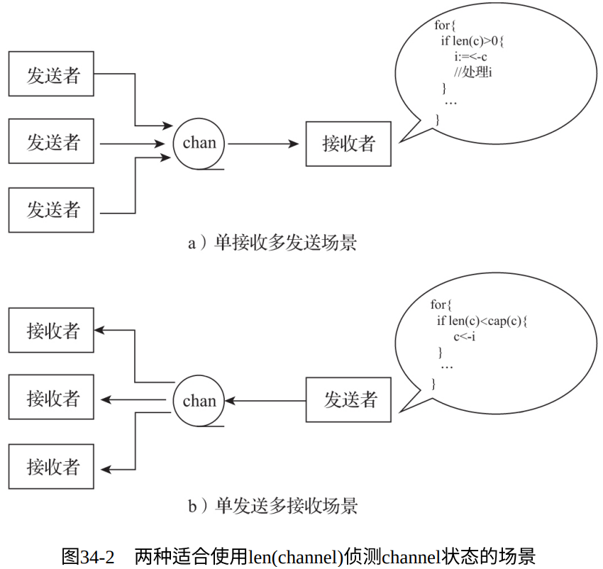

- channel类型在Go中为“一等公民”，因此channel原语使用起来很简单：
c := make(chan int) // 创建一个⽆缓冲(unbuffered)的int类型的channel
c := make(chan int, 5) // 创建一个带缓冲的int类型的channel
c <- x // 向channel c中发送一个值
<- c // 从channel c中接收一个值
x = <- c // 从channel c接收一个值并将其存储到变量x中
x, ok = <- c // 从channel c接收一个值。若channel关闭了，ok将被置为false
for i := range c { ... } // 将for range与channel结合使⽤
close(c) // 关闭channel c
c := make(chan chan int) // 创建一个⽆缓冲的chan int类型的channel
func stream(ctx context.Context, out chan<- Value) error // 将只发送(send-only) channel作为函数参数
func spawn(...) <-chan T // 将只接收(receive-only)类型channel作为返回值
- 当需要同时对多个channel进行操作时，我们会结合使用Go为CSP模型提供的另一个原语：select。通过select，我们可以同时在多个channel上进行发送/接收操作：
select {
case x := <-c1: // 从channel c1接收数据
...
case y, ok := <-c2: // 从channel c2接收数据，并根据ok值判断c2是否已经关闭
...
case c3 <- z: // 将z值发送到channel c3中
...
default: // 当上⾯case中的channel通信均⽆法实施时，执⾏该默认分⽀
}
1. 无缓冲channel
无缓冲channel间距通信性和同步性，可以通过不带有capacity参数的内置make函数创建一个可用的无缓冲channel：
c := make(chan T) // T为channel中元素的类型
对于无缓冲channel而言，我们得到以下结论：
- 发送动作一定发生在接收动作完成之前；
- 接收动作一定发生在发送动作完成之前；
1.1. 用作信号传递
1.1.1. 一对一通知信号
// chapter6/sources/go-channel-case-2.go
type signal struct{}
func worker() {
println("worker is working...")
time.Sleep(1 * time.Second)
}
func spawn(f func()) <-chan signal {
c := make(chan signal)
go func() {
println("worker start to work...")
f()
c <- signal(struct{}{})
}()
return c
}
func main() {
println("start a worker...")
c := spawn(worker)
<-c
fmt.Println("worker work done!")
}
$go run go-channel-case-2.go
start a worker...
worker start to work...
worker is working...
worker work done!
1.1.2. 一对多通知信号
- 通知一组goroutine开始工作
// chapter6/sources/go-channel-case-3.go
type signal struct{}
func worker(i int) {
fmt.Printf("worker %d: is working...\n", i)
time.Sleep(1 * time.Second)
fmt.Printf("worker %d: works done\n", i)
}
func spawnGroup(f func(i int), num int, groupSignal <-chan signal) <-chan signal {
c := make(chan signal)
var wg sync.WaitGroup
for i := 0; i < num; i++ {
wg.Add(1)
go func(i int) {
<-groupSignal
fmt.Printf("worker %d: start to work...\n", i)
f(i)
wg.Done()
}(i + 1)
}
go func() {
wg.Wait()
c <- signal(struct{}{})
}()
return c
}
func main() {
fmt.Println("start a group of workers...")
groupSignal := make(chan signal)
c := spawnGroup(worker, 5, groupSignal)
time.Sleep(5 * time.Second)
fmt.Println("the group of workers start to work...")
close(groupSignal)
<-c
fmt.Println("the group of workers work done!")
}
$go run go-channel-case-3.go
start a group of workers...
the group of workers start to work...
worker 3: start to work...
worker 3: is working...
worker 4: start to work...
worker 4: is working...
worker 1: start to work...
worker 1: is working...
worker 5: start to work...
worker 5: is working...
worker 2: start to work...
worker 2: is working...
worker 3: works done
worker 4: works done
worker 5: works done
worker 1: works done
worker 2: works done
the group of workers work done!
- 通知一组goroutine退出
// chapter6/sources/go-channel-case-4.go
type signal struct{}
func worker(i int, quit <-chan signal) {
fmt.Printf("worker %d: is working...\n", i)
LOOP:
for {
select {
default:
// 模拟worker⼯作
time.Sleep(1 * time.Second)
case <-quit:
break LOOP
}
}
fmt.Printf("worker %d: works done\n", i)
}
func spawnGroup(f func(int, <-chan signal), num int,
groupSignal <-chan signal) <-chan signal {
c := make(chan signal)
var wg sync.WaitGroup
for i := 0; i < num; i++ {
wg.Add(1)
go func(i int) {
fmt.Printf("worker %d: start to work...\n", i)
f(i, groupSignal)
wg.Done()
}(i + 1)
}
go func() {
wg.Wait()
c <- signal(struct{}{})
}()
return c
}
func main() {
fmt.Println("start a group of workers...")
groupSignal := make(chan signal)
c := spawnGroup(worker, 5, groupSignal)
fmt.Println("the group of workers start to work...")
time.Sleep(5 * time.Second)
// 通知workers退出
fmt.Println("notify the group of workers to exit...")
close(groupSignal)
<-c
fmt.Println("the group of workers work done!")
}
$go run go-channel-case-4.go
start a group of workers...
the group of workers start to work...
worker 1: start to work...
worker 1: is working...
worker 3: start to work...
worker 3: is working...
worker 5: start to work...
worker 5: is working...
worker 4: start to work...
worker 4: is working...
worker 2: start to work...
worker 2: is working...
notify the group of workers to exit...
worker 2: works done
worker 4: works done
worker 5: works done
worker 1: works done
worker 3: works done
the group of workers work done!
1.2. 用于替代锁机制
无缓冲channel具有同步特性，这让它在某些场合可以替代锁，从而使得程序更加清晰，可读性更好。
// chapter6/sources/go-channel-case-6.go
type counter struct {
c chan int
i int
}
var cter counter
func InitCounter() {
cter = counter{
c: make(chan int),
}
go func() {
for {
cter.i++
cter.c <- cter.i
}
}()
fmt.Println("counter init ok")
}
func Increase() int {
return <-cter.c
}
func init() {
InitCounter()
}
func main() {
for i := 0; i < 10; i++ {
go func(i int) {
v := Increase()
fmt.Printf("goroutine-%d: current counter value is%d\n", i, v)
}(i)
}
time.Sleep(5 * time.Second)
}
$go run go-channel-case-6.go
counter init ok
goroutine-9: current counter value is 10
goroutine-0: current counter value is 1
goroutine-6: current counter value is 7
goroutine-2: current counter value is 3
goroutine-8: current counter value is 9
goroutine-4: current counter value is 5
goroutine-5: current counter value is 6
goroutine-1: current counter value is 2
goroutine-7: current counter value is 8
goroutine-3: current counter value is 4
2. 带缓冲channel
带缓冲channel可以通过带有capacity参数的内置make函数创建：
c := make(chan T, capacity) // T为channel中元素的类型, capacity为 带缓冲channel的缓冲
对一个带缓冲channel：
- 在缓冲区无数据或有数据但未满的情况下，对其进行发送操作的goroutine不会阻塞；
- 在缓冲区已满的情况下，对其进行发送操作的goroutine会阻塞；
- 在缓冲区为空的情况下，对其进行接收操作的goroutine会阻塞；
2.1. 用作消息队列
- 单收单发性能基准测试
// ⽆缓冲channel
// chapter6/sources/go-channel-operation-benchmark/unbufferedchan
$go test -bench . one_to_one_test.go
goos: darwin
goarch: amd64
BenchmarkUnbufferedChan1To1Send-8 6202120
198 ns/op
BenchmarkUnbufferedChan1To1Recv-8 6752820
178 ns/op
PASS
// 带缓冲channel
// chapter6/sources/go-channel-operation-benchmark/bufferedchan
$go test -bench . one_to_one_cap_10_test.go
goos: darwin
goarch: amd64
BenchmarkBufferedChan1To1SendCap10-8 14397186
83.7 ns/op
BenchmarkBufferedChan1To1RecvCap10-8 14275723
82.2 ns/op
PASS
$go test -bench . one_to_one_cap_100_test.go
goos: darwin
goarch: amd64
BenchmarkBufferedChan1To1SendCap100-8 18011007
65.5 ns/op
BenchmarkBufferedChan1To1RecvCap100-8 18031082
65.4 ns/op
PASS
- 多收多发性能基准测试
// ⽆缓冲channel
// chapter6/sources/go-channel-operation-benchmark/unbufferedchan
$go test -bench . multi_to_multi_test.go
goos: darwin
goarch: amd64
BenchmarkUnbufferedChanNToNSend-8 317324
3793 ns/op
BenchmarkUnbufferedChanNToNRecv-8 295288
4139 ns/op
PASS
// 带缓冲channel
// chapter6/sources/go-channel-operation-benchmark/bufferedchan
$go test -bench . multi_to_multi_cap_10_test.go
goos: darwin
goarch: amd64
BenchmarkBufferedChanNToNSendCap10-8 534625
2252 ns/op
BenchmarkBufferedChanNToNRecvCap10-8 476221
2752 ns/op
PASS
$go test -bench . multi_to_multi_cap_100_test.go
goos: darwin
goarch: amd64
BenchmarkBufferedChanNToNSendCap100-8 1000000
1283 ns/op
BenchmarkBufferedChanNToNRecvCap100-8 1000000
1250 ns/op
PASS
2.2. 用作计数信号量
- Go并发设计的一个惯用法是将带缓冲channel用作计数信号量（counting semaphore）
- 一个发往带缓冲channel的发送操作表示获取一个信号量槽位，而一个来自带缓冲channel的接收操作则表示释放一个信号量槽位
// chapter6/sources/go-channel-case-7.go
var active = make(chan struct{}, 3)
var jobs = make(chan int, 10)
func main() {
go func() {
for i := 0; i < 8; i++ {
jobs <- (i + 1)
}
close(jobs)
}()
var wg sync.WaitGroup
for j := range jobs {
wg.Add(1)
go func(j int) {
active <- struct{}{}
log.Printf("handle job: %d\n", j)
time.Sleep(2 * time.Second)
<-active
wg.Done()
}(j)
}
wg.Wait()
}
$go run go-channel-case-7.go
2020/02/04 09:57:02 handle job: 8
2020/02/04 09:57:02 handle job: 4
2020/02/04 09:57:02 handle job: 1
2020/02/04 09:57:04 handle job: 2
2020/02/04 09:57:04 handle job: 3
2020/02/04 09:57:04 handle job: 7
2020/02/04 09:57:06 handle job: 6
2020/02/04 09:57:06 handle job: 5
2.3. len(channel)的应用
len是Go语言原生内置的函数，它可以接受数组、切片、map、字符串或channel类型的参数，并返回对应类型的“长度”——一个整型值。以len(s)为例：
- 如果s是字符串（string）类型，len(s)返回字符串中的字节数；
- 如何s是[n]T或*[n]T的数组类型，len(s)返回数组的长度n；
- 如果s是[]T的切片（slice）类型，len(s)返回切片的当前长度；
- 如果s是map[K]T的map类型，len(s)返回map中已定义的key的个数；
- 如果s是chan T类型，那么len(s)针对channel的类型不同，有如下两种语义：
- 当s为无缓冲channel时，len(s)总是返回0；
- 当s为带缓冲channel时，len(s)返回当前channel s中尚未被读取的元素个数；

3. nil channel的妙用
对没有初始化的channel（nil channel）进行读写操作将会发生阻塞，并得到如下的错误信息：
fatal error: all goroutines are asleep - deadlock!
goroutine 1 [chan receive (nil chan)]:
但是nil channel并非一无是处：
// chapter6/sources/go-channel-case-10.go
func main() {
c1, c2 := make(chan int), make(chan int)
go func() {
time.Sleep(time.Second * 5)
c1 <- 5
close(c1)
}()
go func() {
time.Sleep(time.Second * 7)
c2 <- 7
close(c2)
}()
for {
select {
case x, ok := <-c1:
if !ok {
c1 = nil
} else {
fmt.Println(x)
}
case x, ok := <-c2:
if !ok {
c2 = nil
} else {
fmt.Println(x)
}
}
if c1 == nil && c2 == nil {
break
}
}
fmt.Println("program end")
}
$go run go-channel-case-10.go
5
7
program end
4. 与select结合使用的一些惯用法
4.1. 利用default分支避免阻塞
select语句的default分支的语义是在其他分支均因通信未就绪或无法被选择的时候执行，这就为default分支赋予了一种“避免阻塞”的特性。在Go标准库中，这个惯用法也有应用：
// $GOROOT/src/time/sleep.go
func sendTime(c interface{}, seq uintptr) {
// ⽆阻塞地向c发送当前时间
// ...
select {
case c.(chan Time) <- Now():
default:
}
}
4.2. 实现超时机制
- 带超时机制的select是Go语义中一种常见的select和channel的组和用法
- 在应用带有超时机制的select时，要特别注意timer使用后的释放，尤其是在大量创建timer时
- Go语言标准库提供的timer实质上是由Go运行时自行维护的，而非操作系统级的定时器资源
func worker() {
select {
case <-c:
// ...
case <-time.After(30 *time.Second):
return
}
}
4.3. 实现心跳机制
- 结合time包的Ticker，我们可以实现带有心跳机制的select
- 这种机制使我们可以在监听channel的同时，执行一些周期性的任务
func worker() {
heartbeat := time.NewTicker(30 * time.Second)
defer heartbeat.Stop()
for {
select {
case <-c:
// ... 处理业务逻辑
case <- heartbeat.C:
//... 处理⼼跳
}
}
}